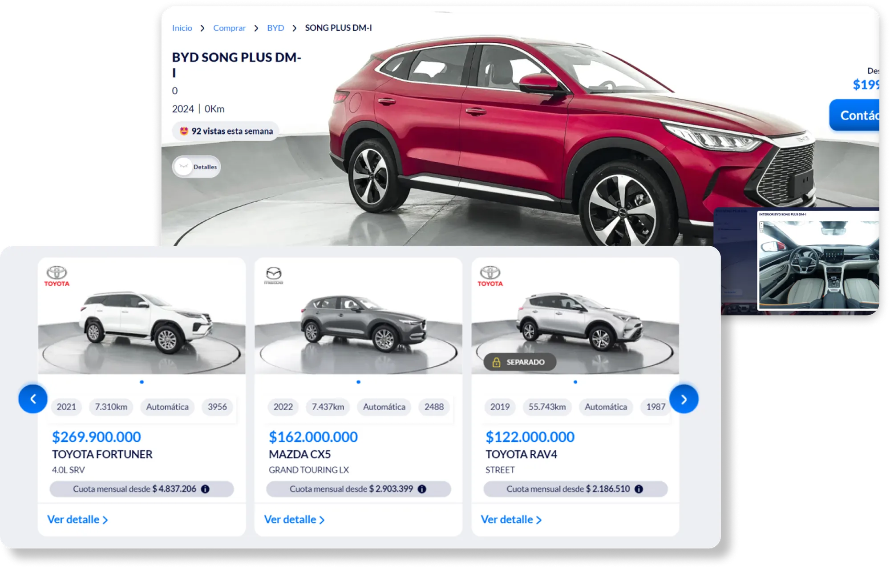
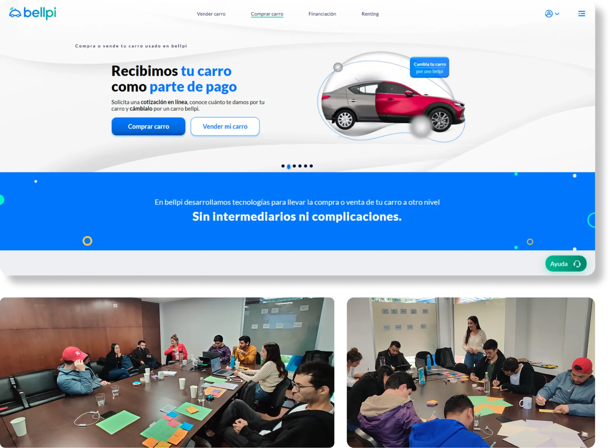
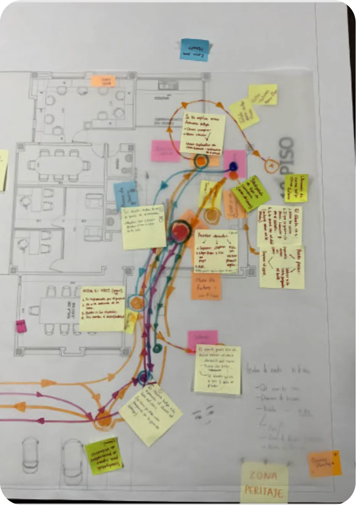
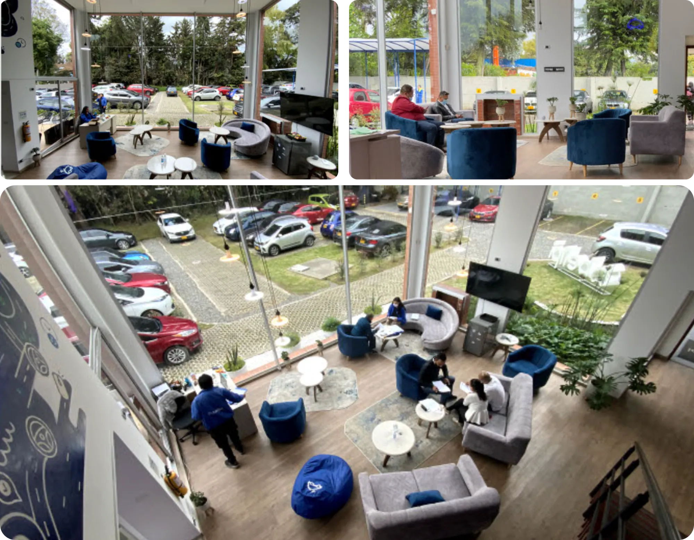
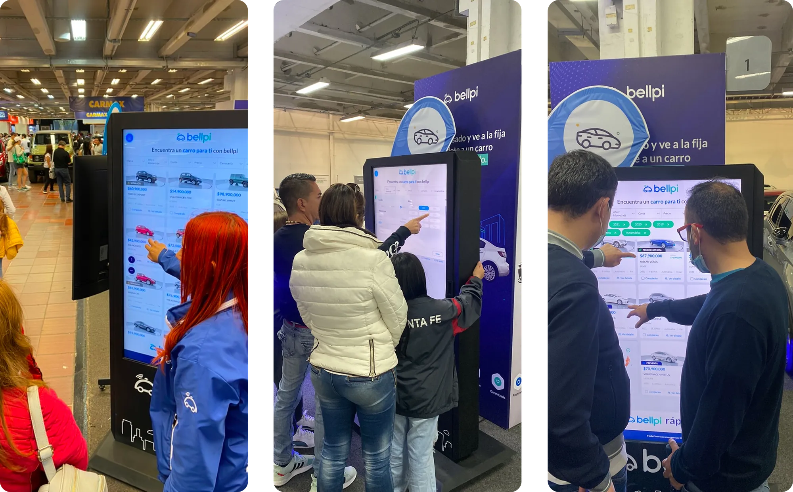

UX & Service Designer · 2024
Bellpi
Plateforme e-commerce · Véhicules d'occasion · Colombie
Bellpi est une plateforme e-commerce innovante de vente et d'achat de véhicules d'occasion en Colombie, visant à transformer une expérience traditionnellement complexe en un parcours numérique 100 % centré utilisateur.
En tant que UX & Service Designer, j'ai contribué au lancement de la version 1 de la plateforme et à ses itérations successives :
- Concevoir et optimiser des parcours utilisateur de bout en bout pour les acheteurs et les vendeurs.
- Effectuer des recherches sur les utilisateurs et traduire les résultats en informations exploitables.
- Collaborer avec des équipes interfonctionnelles pour aligner les décisions de conception sur les objectifs commerciaux.
- Créer des wireframes, des prototypes et des plans de service pour visualiser et valider les solutions proposées.

Lancement de produit
J'ai travaillé au sein d'une équipe multidisciplinaire où, dès le lancement initial du produit, nous avons établi des OKR et KPI clairs pour surveiller les performances et guider le développement itératif. Cette approche structurée a conduit à une deuxième phase centrée sur l'empathie des utilisateurs, dans laquelle nous avons évalué les parcours utilisateur conçus pour les vendeurs et les acheteurs.
Méthodologies appliquées :
- Design Thinking
- Lean UX
- Scrum
Mon rôle consistait également à adapter la plateforme à plusieurs formats — totems mobiles, tablettes, ordinateurs de bureau et écrans tactiles — tout en maintenant une expérience utilisateur cohérente.

Itération continue
La recherche et l'analyse UX ont révélé des informations clés qui ont guidé l'amélioration continue de la plateforme. J'ai joué un rôle stratégique en traduisant ces résultats en solutions de conception exploitables, en alignant les besoins des utilisateurs sur les objectifs de l'entreprise.
Grâce à une étroite collaboration avec les développeurs et les parties prenantes, j'ai assuré la cohérence entre les points de contact tout en me concentrant sur l'accessibilité, l'architecture de l'information et la convivialité dans un environnement agile.

Expérience sur site
En parallèle, j'ai également contribué à l'évaluation et à l'amélioration de l'expérience physique. Cela impliquait de mener des séances d'observation, une analyse approfondie et une modélisation spatiale de la disposition et des flux au sein du premier emplacement physique de Bellpi.
- Zones d'attente
- Zone de points d'information
- Zones de rencontre avec les acheteurs
- Zones de snacks
- Écrans tactiles et ordinateurs pour les utilisateurs

Expérience interactive
Dans le cadre du processus de conception UX, j'ai contribué à la création d'une expérience web réactive optimisée pour les interactions tactiles, spécifiquement pour une utilisation lors d'événements et salons professionnels. L'objectif était de garantir une navigation intuitive, une compréhension rapide et une interaction accessible dans des environnements publics et à fort trafic.
